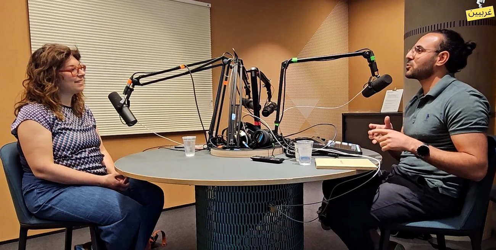

Alaa Same · Oslo, Norway
Technology.
Stories.
Human impact.
I build projects, communities and conversations that move people forward.
Solution ConsultantProject ProfessionalStorytellerCommunity Builder

At a glance
Professional work
Delivery with direction.
Complex environments need clarity, trust and disciplined execution. My experience spans quality leadership, Agile delivery and stakeholder collaboration.
Risk-based test leadership, cross-team coordination and traceable execution in a mission-critical programme.
QualityRiskDelivery
Structured quality assurance across frontend, backend, interfaces and automation in the insurance domain.
TestingAgileStakeholders
Facilitated a multidisciplinary team and helped shape a decision basis for connected-car opportunities.
ScrumStrategyAnalysis
Signature project
Cycling4Hope
From Oslo to Damascus by bicycle, transforming a personal return journey into public storytelling and support for education.
Swipe to explore →
Visit Cycling4Hope ↗Media portfolio
Stories worth hearing.
Podcasts, public speaking and community projects that bridge research, language and lived experience.

17 episodes · Host · Producer
غربيين · Gharbiyyin
Research and specialist knowledge about the Middle East, opened to Arabic-speaking audiences.
Open channel ↗
Oral history · Podcast
رحلة · Rehla
Long-form conversations preserving stories of displacement, resilience and belonging.
Explore episodes ↗
Speaker · Community builder
Public leadership
Talks, events and initiatives that turn ideas into shared moments.
Swipe through media →
Featured publication
The Syrian Dialogue
“Dialogue builds trust where fear once ruled.”
Face-to-face conversations in Oslo and Trondheim about identity, justice, democracy, reconciliation and Syria’s future.
IdentityJusticeDemocracyReconciliationTrust
Read publication ↗
Education & credentials
Technology, business and leadership.
Digital Economics and Management
University of Oslo
Informatics
University of Oslo
PRINCE2 Agile®Professional Scrum MasterISTQB®Azure Fundamentals
Let’s connect
Different worlds.
One conversation.
Interested in meaningful work where technology, delivery, communication and social impact meet.